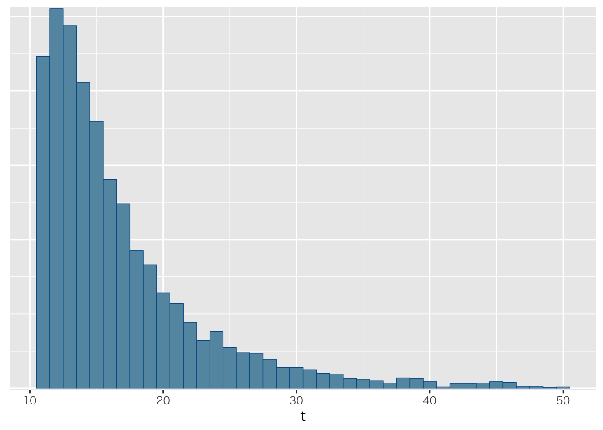

ある小さな航空会社が，会社全体で何機の航空機を所有しているかを推定する問題を考えてみよう。ある日の空港で，あなたはその航空会社の飛行機のうちの10機が隣のゲートに留まっているのを見て，尾翼の識別番号を記録した。数日後別の空港で，あなたはその会社の飛行機のうちの5機をみつけた。それらの飛行機の尾翼番号を見ると，5機のうち4機が前回のリストと同じであった。
一度とったサンプルをもう一度取った時，重複の程度から全体の大きさを推定する
\(t\)を道の母集団サイズ，\(z\)を第一標本サイズ，\(n\)を第二標本サイズとし，\(n\)のうち\(k\)が第一標本と重複していたとすると，再捕獲の確率は，
\[ \begin{array} { c } { \operatorname { Pr } ( K = k ) = \left( \begin{array} { l } { x } \\ { k } \end{array} \right) \left( \begin{array} { c } { t - x } \\ { n - k } \end{array} \right) / \left( \begin{array} { l } { t } \\ { n } \end{array} \right) } \end{array}\]
となりますが，超幾何分布をつかって \[ k \sim Hypergeometric(n,x,t) \] と表すこともできます。
x <- 10 # number of captures
k <- 4 # number of recaptures from n
n <- 5 # size of second sample
tmax <- 50 # maximum population size
datastan <- list(X=x,N=n,K=k,TMax=tmax)## data{
## int<lower=0> X; //第一標本サイズ
## int<lower=0> N; //第二標本サイズ
## int<lower=0,upper=N> K; //再捕獲した数
## int<lower=X> TMax; // ありえそうな最大数
## }
##
## transformed data{
## int<lower=X> tmin; //少なくともこれぐらいはいる
## tmin = X + N - K;
## }
##
## parameters{
## }
##
## transformed parameters{
## vector[TMax] lp; //最大数までの尤度
## for(t in 1:TMax){
## if(t < tmin){
## // 最低限以下はあり得ないので尤度を負の無限大にする
## lp[t] = log(1.0/TMax) + negative_infinity();
## }else{
## // 最大値まで均等にありそうな超幾何分布 HM(K|N,X,台数)
## lp[t] = log(1.0/TMax) + hypergeometric_lpmf(K|N,X,t-X);
## }
## }
## }
##
## model{
## target += log_sum_exp(lp);
## }
##
## generated quantities{
## int<lower=tmin,upper=TMax> t;
## simplex[TMax] tp;
## tp = softmax(lp);
## t = categorical_rng(tp);
## }modelEx2 <- stan_model("plane.stan")
fit <- sampling(modelEx2,datastan,algorithm="Fixed_param")
fit %>% as.array %>% bayesplot::mcmc_hist(pars="t",binwidth=1)